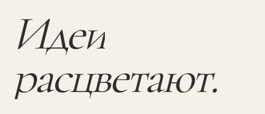
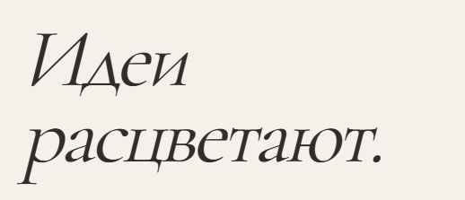
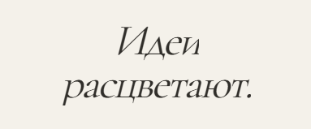
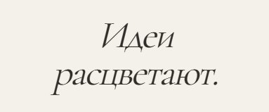
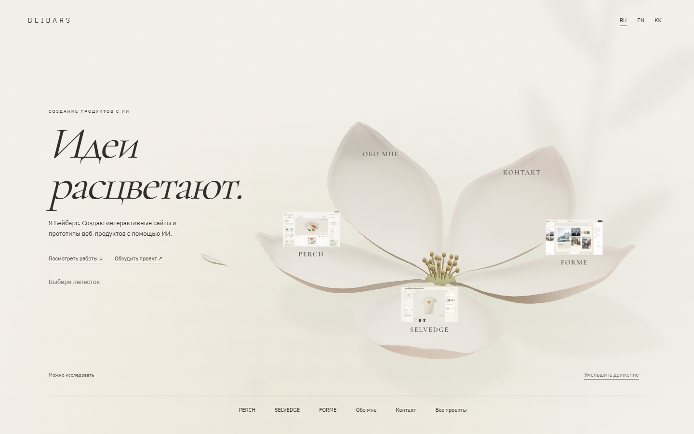
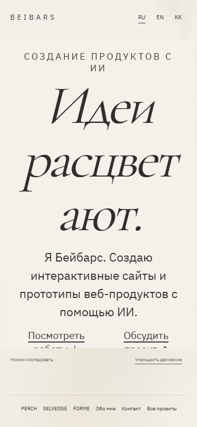
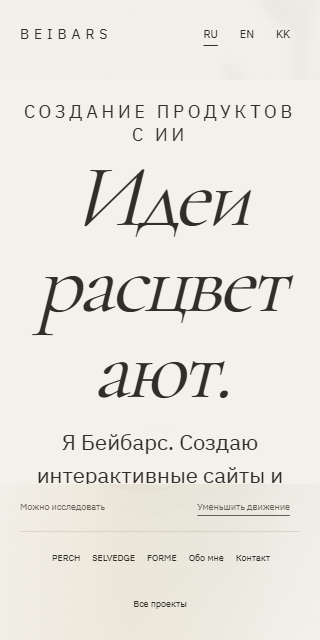

Полный рисунок курсива
Старая маска слов обрезала нижние штрихи и наклонные края букв. В новой версии область маски расширена, а компенсирующие отступы сохраняют положение слов, переносы и расстояние между строками.
Одинаковый размер и положение текста


В этих двух кадрах скрыты окружающие элементы, чтобы сравнить только буквы. Текст и его координаты сохранены.
Мобильный заголовок


Весь экран

Увеличение текста до 200%


Проверено в Chrome на Windows с аппаратным WebGL AMD Radeon. Мобильные размеры — эмуляция, не физический телефон. Регрессионная проверка сравнивает пиксели букв с маской и без неё в RU/EN/KK, во время появления и после него. Также проверены уменьшенное движение и быстрые переключения языка.